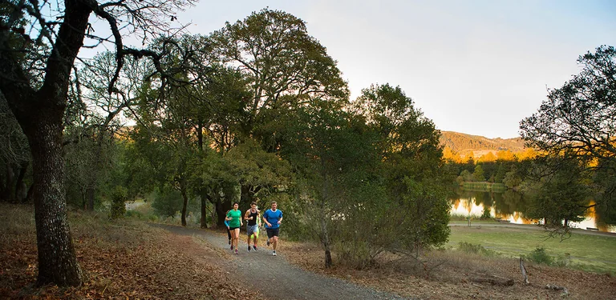

Once the harvest is in, Sonoma County's vineyards turn from green to gold, orange and red. Sonoma County Tourism says the county's fall color runs from early September through late November, which puts the first weeks of November still inside the window. The good news for a Santa Rosa visit is that you do not have to go far: vineyard valleys, maple-lined creeks and ridge trails all start within half an hour of downtown.
Vineyard color within half an hour
Santa Rosa sits in the middle of the county's best-known valleys, so you can choose your color by direction:
- Russian River Valley starts on the western edge of town. Most estates are twenty to twenty-five minutes from downtown.
- Sonoma Valley is southeast on Highway 12. The Kenwood stretch is about twenty minutes away.
- Dry Creek and Alexander valleys are about twenty-five minutes north up Highway 101, around Healdsburg.
For fall views, Sonoma County Tourism singles out Wilson Winery in Dry Creek Valley, where the vines turn deep gold and burnt orange; Stonestreet Estate Vineyards in Alexander Valley; Emeritus Vineyards, a dry-farmed estate near Sebastopol in the Russian River Valley; and Benziger Family Winery in Glen Ellen, next to Jack London State Historic Park. Check each winery for current tasting times and reservations before you go. Our guide to wine tasting from Santa Rosa covers the valleys in more detail.

Spring Lake Regional Park
On Santa Rosa's east side, Spring Lake is the quickest fall walk from downtown. Sonoma County Tourism calls out its big-leaf maples, which turn red and yellow along the creeks, and trails covered in fallen leaves.
- The walk: the Spring Lake Loop Trail is a 2.3-mile paved loop around the lake, mostly flat with a short climb to the main dam. The park has nearly 10 miles of trails in all, and they connect to Trione-Annadel State Park and the city's Howarth Park.
- Hours: 7 a.m. to sunset.
- Parking: $8 in fall, winter and spring, free for Regional Parks members. The north entrance is at 393 Violetti Road.

North Sonoma Mountain Regional Park
For a bigger view, North Sonoma Mountain Regional Park and Open Space Preserve, on the Santa Rosa side of Sonoma Mountain, covers 820 acres. Sonoma County Tourism recommends its 3.7-mile section of the Sonoma Mountain Bay Area Ridge Trail in fall, for trees in full color and long views over the autumn vineyards below. Bring water and allow time for the full section.
Shiloh Ranch Regional Park, Windsor
Just north of Santa Rosa, Shiloh Ranch Regional Park in Windsor covers 850 acres of oak woodland and mixed evergreen forest, with ridges that look out over the Santa Rosa Plain, a shaded creek and a pond. Sonoma County Tourism says the park "shimmers with color" in fall.
- Trails: nearly 8 miles of looped, moderately difficult dirt trails. One suggested loop links the Ridge, Creekside, Pond and Big Leaf trails.
- Hours and parking: 7 a.m. to sunset; parking is $8, free for members. The address is 5750 Faught Road.
- Dogs: not allowed on the trails, only in the picnic area and parking lot.
The park burned in the 2017 Tubbs Fire, and the regrowth is part of what you see on the trail today.
Timing your fall color day
- Watch the clock. Daylight saving time ends on November 1, 2026, and sunsets come early through the rest of the month, so plan the walk first and the tasting after.
- Pair a park with a valley. Spring Lake is on the east side of town, toward Highway 12 and Sonoma Valley, and Shiloh Ranch is on the way north to Healdsburg.
- Have a rain plan. November starts the wet season. If the weather turns, our rainy-day guide has the indoor options.
Good to know
- Sonoma County's fall color season runs from early September through late November.
- Spring Lake and Shiloh Ranch are open 7 a.m. to sunset, with $8 parking in fall.
- Dogs are not allowed on Shiloh Ranch trails.
- Clocks go back on November 1, 2026.
Stay downtown for fall color
With vineyards and parks on every side, downtown Santa Rosa makes the shortest drive to all of them. Hotel E is in a historic building on Old Courthouse Square, with continental breakfast, an evening happy hour after a day outside and valet parking. Art House Santa Rosa is a few blocks away on 7th Street. From either, dinner downtown is a short walk.
Plan your stay downtown
Browse hotels, restaurants, wineries and attractions, all in one place.
Open the directory